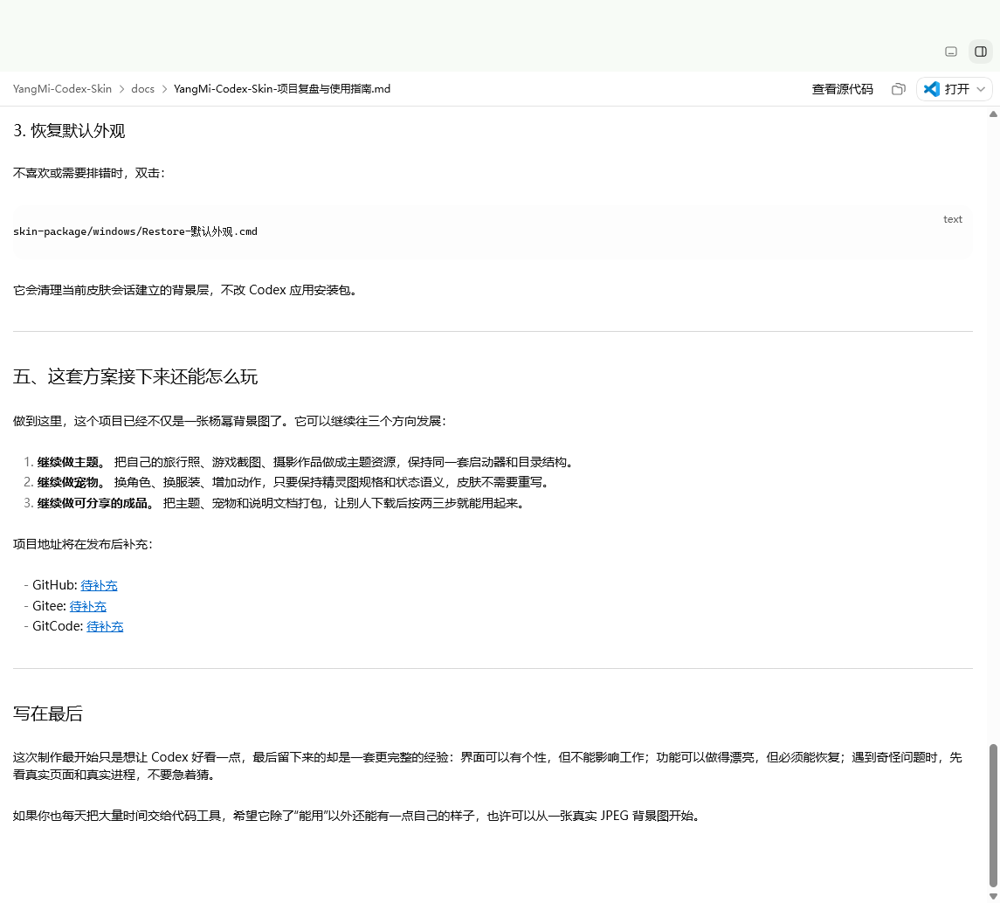

THEME REFERENCES
当前收录的四张主题参考图
页面不把临时风格词当作海报出处。欢迎补充每张图片的正式出处后，再更新为准确标题。


ANIMATED COMPANION
它不只是站在右下角
左右拖动、悬停互动、执行任务与等待输入，都使用对应的宠物状态帧。


QUICK START
三步应用到自己的 Codex
- 下载项目，进入
skin-package/windows/。 - 双击对应的
Apply-*.cmd。 - 用真实 JPEG 覆盖
custom-background/background.jpg后再次应用。